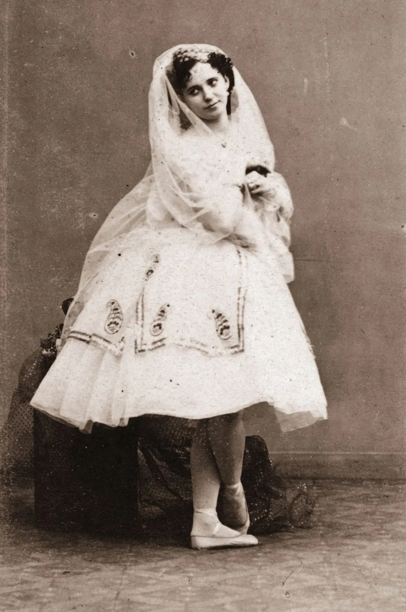

Marie Taglioni
Marie Taglioni
Foi uma das mais influentes bailarinas do século XIX e um verdadeiro ícone da era Romântica do Ballet. Nascida em 23 de abril de 1804, em Estocolmo, Suécia, ela era filha da bailarina suéca Sophie Karsten e do bailarino e coreógrafo italiano Filippo Taglioni, que teve um papel decisivo na formação de sua carreira e técnica.
Desde muito jovem, Marie foi treinada rigorosamente por seu pai, que adaptou os métodos de ensino ao seu físico, menos "forte" que o ideal da época. Para aperfeiçoar isso, o pai da moça criou uma rotina de treinamento rigorosa de 6 meses, com jornadas de 2 horas diárias pela manhã de exercícios com foco nas pernas e mais 2 horas à tarde com foco em movimentos que a ajudariam a refinar sua postura na dança. O resultado foi um estilo único: leveza, pureza de linha e uma elegância etérea que encantou o público europeu.
Em 1822 fez sua estreia em Viena com o Ballet Lá Réception Dúne Jeune Nymphe à La Cour de Terpsichor, um ballet criado por seu pai. Depois disso dançou em vários lugares como Londres e Paris. Foi só ao entrar para a Ópera de Paris, aos 23 anos, que Taglioni alcançou a fama. Isso se deu principalmente após dançar o ballet La Sylphide.
Marie Taglioni é amplamente reconhecida como a primeira bailarina a dançar na ponta dos pés com propósito artístico, e não apenas como truque técnico. Mas, embora Marie seja apontada muitas vezes por ser a primeira, as bailarinas Geneviève Gosselin e Evdokia Istomina, o fizeram primeiro na mesma época, mas foi Marie quem se tornou o grande símbolo por seu enorme sucesso em La Sylphide, coreografado por seu pai em 1832.
Nesse papel, ela interpretava uma criatura mágica do ar, a Sylphide, e sua dança nas pontas simbolizava exatamente isso: um ser leve, inalcançável e sobrenatural. A imagem de Taglioni dançando com delicadeza e graciosidade, quase flutuando, se tornou o ideal da bailarina romântica.

Símbolo do Ballet Romântico, durante sua carreira, Marie Taglioni se apresentou nos mais importantes teatros da Europa, incluindo a Ópera de Paris, onde foi estrela. Ela foi reverenciada não apenas por sua técnica, mas por sua expressividade contida, espiritualidade e estilo etéreo, que definiram o ideal da bailarina romântica.
Ela também dançou em outras obras marcantes, como:
Robert le Diable - coreografado por seu pai, Filippo Taglioni (na famosa “Dança das Freiras”)
La Gitana
La Fille du Danube
O fanatismo de seus fãs foi algo que se destacou em sua carreira, porque nenhum bailarino havia sido tão adorado assim até então. Esse amor incondicional ia além de flores e autógrafos na porta do teatro.
A mania do público por Marie foi tanta que mulheres copiaram seus penteados, criaram bonecas iguais a ela e outros produtos “La Sylphide”. Dizem que até a rainha Vitória teve uma boneca La Sylphide quando pequena. Há relatos de que fãs literalmente comeram a sapatilha de Taglioni num jantar. Até hoje não se sabe qual é o fundo de verdade presente em toda a história, mas isso foi infame o suficiente para se tornar um sucesso.
No mesmo ano em que encantou o mundo como La Sylphide, em 1832, Marie Taglioni passou a assinar como Condessa de Voisins, ao se casar com o conde Auguste Gilbert de Voisins. A união foi infeliz por muitos anos, rodeada de escândalos e chegou ao fim em apenas três.
Em 1837, Marie deixou a Opera de Paris para assumir um contrato em St. Petersburg no Mariinsky Ballet, também conhecido como o Ballet Kirov, onde ela permaneceria na maior parte do século XIX.
Os filhos de Marie se uniram a pessoas ricas e de títulos, sendo que a primogênita, Eugenie Marie Edwige Gilbert de Voinsins, se casou com o príncipe russo Alexander Trubetskoy. Já Marie, passou dificuldades no final de sua vida, mesmo tendo acumulado uma fortuna que perdeu aos poucos. Em 1858, já estava falida. Para se sustentar, voltou para Paris onde trabalhou como professora no Ballet da Ópera de Paris e conheceu Emma Livry. Marie foi uma das testemunhas de seu trágico acidente.

Marie coreografou um único Ballet, Le Papillon, em 1860, que virou a assinatura de sua pupila, a jovem bailarina francesa, Emma Livry. Em 1858, Emma havia estrelado a produção do Ballet La Sylphide, nove anos depois da aposentadoria de Marie Taglioni (em 1847). Marie ensinou a ela sua técnica, oficializando que via Emma Livry como sua sucessora.
Porém, em 15 de Novembro de 1862, Emma protagonizou uma das histórias mais trágicas da dança, no palco, em um ensaio de Le Papillon, acidentalmente sua roupa pegou fogo. Era o tempo de iluminação a gás e esses acidentes eram comuns, mas o de Emma Livry foi o pior de todos os tempos. Quase 70% do seu corpo foi queimado, especialmente as pernas. Há relatos de que Marie Taglioni esfregou graxa de maquiagem nas feridas, achando que funcionaria como pomada. Emma ainda sobreviveu com dor e ferimentos por meses, mas sucumbiu a septicemia, e morreu com apenas 21 anos.
Marie também encontrou alternativa de sustento, durante a Guerra Franco-Prussiana (1870 - 1871), ensinando Ballet para crianças e senhoras da sociedade em Londres, mas permaneceu pobre até o final de sua vida.
Marie Taglioni foi sem dúvida a bailarina mais famosa de sua época, se tornando uma celebridade de valor inestimável para o século XIX. Seu porte físico e suas qualidades artísticas como bailarina fizeram com que Marie Taglioni se tornasse uma lenda e fosse reconhecida até os dias atuais.
Sua influência permanece viva até hoje, tanto na técnica como na estética do Ballet Clássico.
Ela ajudou a moldar a imagem da bailarina como um ser quase sobrenatural, símbolo de leveza, virtude e arte pura. Sua figura inspirou pintores, escritores e músicos da época.
Marie Taglioni faleceu em Marselha, França, em 22 de abril de 1884, um dia antes de seu 80º aniversário, mas seu nome continua eternamente ligado à magia do Ballet.
Seu corpo foi transferido para Paris, mas há uma divergência se está efetivamente enterrada em Montmartre ou no Cemitério de Père Lachaise. Como há muitos astros da dança enterrados no cemitério do bairro boêmio de Paris, justamente onde está o túmulo da mãe de Marie, é o que muitos consideram ser seu endereço final. Tanto que é comum que bailarinas deixem sapatilhas de ponta usadas no túmulo, como uma homenagem e agradecimento à primeira bailarina de pontas da História.
Fontes e referências:
miscelana.com.br,
megacurioso.com.br,
britannica.com,
petitedanse.com.br